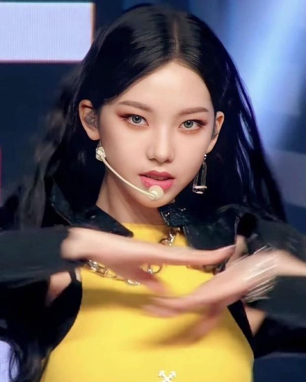

SM엔터테인먼트의 선배 걸그룹들보다 보이그룹들의 계보를 이어받은 느낌이 굉장히 강하다. SM 걸그룹들 중 최초로 H.O.T., 동방신기, EXO 같이 정통 SMP 느낌이 물씬 나는 Black Mamba로 데뷔했다. 타이틀곡들은 켄지의 영향이 완전히 배제된 채 유영진이 담당하기 때문에 강렬한 느낌을 주로 내세운다. 
Next Level은 Black Mamba보다 더 정통 SMP 스타일이다. Savage에서는 기존에 발표한 타이틀곡들보다도 더 강렬한 SMP를 선보였다. Girls에서는 가장 강렬한 SMP를 선보였다. 기존의 SM 걸그룹들의 특징인 매 앨범마다 완전히 다른 컨셉트도 시도하지 않은 채, 이제는 콘셉트가 무엇인지가 무의미할 정도로 일관성을 보여주었다.